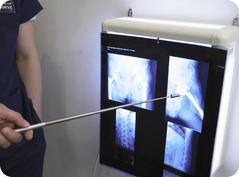

Первый в Казахстане медицинский центр, который занимается лечением и профилактикой заболеваний опорно-двигательного аппарата с помощью медицинского фитнеса. За 6 лет существования центра: мы вылечили более 2000 пациентов, открыли 2 филиала, планируем открытие еще 5, штат более 50 квалифицированных врачей и инструкторов-лфк, стали учебной базой кафедры Реабилитологии и спортивной медцины НАО "Медициского универститета Астана" получили патенты на методику и разработали собственную франшизу

МЕТОДИКА ДОКТОРА ЛАБУНЦА

Суть кинезотерапии
Преимущественно, после болезни, операции или травмы мышцы человека ослабевают, уменьшается подвижность суставов, нарушаются естественные движения, что приводит к ухудшению общего состояния. А любое физическое упражнение заставляет реагировать не только опорно-двигательный аппарат, а все системы организма: нервную, гормональную, иммунную, что значительно ускоряет процесс выздоровления. В основе кинезотерапии положены результаты научных и клинических исследований работы мышечной системы человека и ее влияния на опорно-двигательный аппарат человека.
Лечение движениями предусматривает адаптированые и нарастающие силовые действия, что постепенно усложняются и индивидуально подобранные для пациента, с учетом его анамнеза и физиологических особенностей. В результате повторяющегося, последовательного и нарастающего обучение движения закрепляются на нейрорефлекторном уровне, что восстанавливает трофику и обмен веществ в костно-мышечной системы человека. Лечение осуществляется с помощью специального оборудования: мячей, эспандеров, лечебно-реабилитационных тренажеров, гантель и т.п., а также только с помощью, например, партерной гимнастики.
Важным условием прохождения кинезотерапевтичного курса является правильное дыхание, в противном случае выполняемые движения не дадут желаемого эффекта.